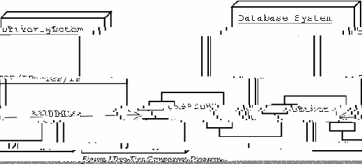

OSDL-DBT-1
A Transactional e-Commerce Database Workload
User Manual
Table of Contents
1Introduction 3
2Setup 3
2.1Getting the Files 3
2.1.1OSDL-DBT-1 3
2.1.2SAP DB 3
2.2Compiling the Test Kit 3
2.3Building the Database 3
2.3.1SAP DB 4
2.3.2Creating the Database 4
3Running the Test Kit 4
This document provides the user instructions on how to use this kit.
The source files for the OSDL-DBT-1 test kit and a database must be retrieved in order to use the kit. The kit currently supports only SAP DB.
The source code for the OSDL-DBT-1 kit and a database must be downloaded.
Instructions on how to obtain the latest source files from the CVS repository for the OSDL-DBT-1 kit can be found on SourceForge at the following Web address:
http://sourceforge.net/cvs/?group_id=52479
The latest stable version of the kit can also be found on SourceForge at the following Web address:
http://sourceforge.net/project/showfiles.php?group_id=52479
The OSDL-DBT-1 test kit was developed using SAP DB Version 7.3.0.21. Newer version of the database should work fine with the test kit. Binary packages for Linux can be obtained from SAP at the following Web address:
http://www.sapdb.org/sap_db_linux.htm
Source packages for Linux can be obtained from SAP at the following Web address:
http://www.sapdb.org/develop/dev_linux.htm
Source files and the binary tgz packages contain the complete database package. If rpm files are desired, the following files are required:
sapdb-ind-7.3.0.21-1.i386.rpm
sapdb-srv-7.3.0.21-1.i386.rpm
sapdb-callif-7.3.0.21-1.i386.rpm
The additional rpm packages can be retrieved and used with the test kit.
The entire test kit can be compiled by running make in the top level directory of the source code.
This following sections explains how to build the database depending on which database is used. SAP DB is currently the only database supported.
An OpenOffice.org spreadsheet is provided to aid in sizing the database:
doc/sapdb_sizing.sxc
Under the Performance tab there are two parameters that can be change. A default value of 1,000 is entered for the number of item to create and a default value of 1 is entered for the number of emulated users (EUs) expected to run against the database. The number of items can be changed to 10,000, 100,000, 1,000,000, or 10,000,000. The number of EUs can be any positive integer.
The data displayed under the Load tab report the expected size of the database for the parameters entered to be used for the physical database layout. The number to note is the total number of 8 KB unites since SAP DB uses those units in its configuration settings. Keep in mind that extra space must be taken into consideration because the database grows during a test run.
A shell script, scripts/sapdb/create_db.sh, creates the physical database. In that script, there are lines beginning with param_adddevspace that define the devices on which the database resides. These lines must be tailored fit the I/O subsystem on the system that the database is running on for the system devspace, log devspace, and user devspace. The number defining the size of the log devspaces and the data devspaces are in number of 8 KB units.
Under each database specific directory under scripts/ is a file called db_setup_sample.sh. This script has two variables defined in it, ITEMS and EUS, which refer to the number of items in the database and the number of EUs to run. These numbers should reflect the number used to size the database in the previous sub-section. Executing the script generates the database table data, creates the physical database, creates the database tables, loads the database, creates indexes, loads the stored procedures, and backs up the database.
The OSDL-DBT-1 test kit can be run in two ways. The kit is designed to be run in a two-tier and a three-tier environment. The two-tier environment involves running the driver against the database directly, as shown in Figure 1. The three-tier environment involves running the driver against a type of transaction management application that sits in front of the database, as shown in Figure 2.

The two-tier environment is not as scalable as the three-tier environment.
The test kit also provides scripts to help collect processor, disk, and memory utilization in the scrips/stats/ directory, cpu.sh, io.sh, and paging.sh respectively. Each script takes two command line arguments, in the following order, the sample size in seconds, and the number of samples to take.
The driver program for the two-tier environment is compiled as dbdriver_p1 in the dbdriver/ directory. The dbdriver_p1 program takes the following arguments, in the following order:
servername - The database connect string.
user - Database user name: dbt.
pass - Database user password: dbt.
items - Number of items in the database.
customers - Number of customers in the database: eus * 2880.
eus - The number of users emulated.
eu/min - The number of users to connect per minut.
think time - The number of seconds a user spends between interactions.
duration - The length of test, in seconds, after all users connect.
The driver program for the three-tier environment is compiled as dbdriver_p2 in the dbdriver/ directory. The dbdriver_p2 program takes the following arguments, in the following order:
servername - The address of the appServer program.
port - The port the appServer program is listening to.
items - Number of items in the database.
customers - Number of customers in the database: eus * 2880.
eus - The number of users emulated.
eu/min - The number of users to connect per minut.
think time - The number of seconds a user spends between interactions.
duration - The length of test, in seconds, after all users connect.
The driver program, in both its forms, records response time data to the file mix.log. A program, results, is provided in the tools/ directory, which takes the file name as a command line argument to analyze the file. The results program also assumes the output files from the cpu.sh, io.sh, and paging.sh are in the scripts/stats/ directory relative to the tools/ directory. The results program displays the results of these files to the screen.